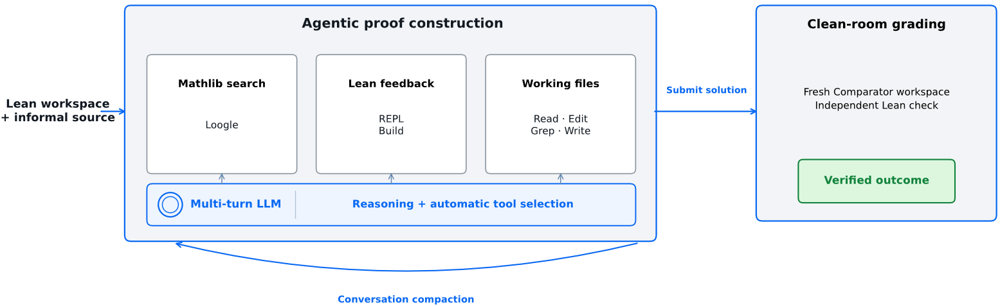

Introduces a benchmark of 341 expert-audited Lean 4 statements on advanced mathematics; agents must prove them against Mathlib, with grading by Comparator and Nanoda.
Abstract
AI systems are increasingly capable of producing machine-checked Lean proofs of advanced mathematical results. Real mathematical formalization, however, is not isolated theorem proving: it requires building the definitions and intermediate lemmas that connect a result to a formal library. Existing evaluations often provide isolated theorem statements in settings where much of this supporting theory is already available in Mathlib. We introduce AutoformBench, a benchmark of 341 Lean 4 formalization tasks drawn from 24 advanced mathematical sources. Lean-experienced mathematicians formalized and audited each target statement, leaving the corresponding Lean proof to the evaluated agent. Each problem is embedded in a broader mathematical development: agents receive the informal proof but must translate it into Lean while constructing the missing definitions, intermediate lemmas, and supporting infrastructure. We compare the performance of frontier models on these problems. We find a largely shared difficulty frontier: success depends less on mathematical domain than on models' ability to construct missing formal infrastructure. Data and code at https://github.com/facebookresearch/autoformbench
Problem
Existing Lean benchmarks mostly test isolated theorem statements whose supporting theory is already in Mathlib. Real formalization also requires building the missing definitions and intermediate lemmas, and current evaluations do not measure this.
Approach
Lean-experienced mathematicians formalized and audited 341 target statements from 24 advanced sources, mostly MIT OpenCourseWare texts, chosen to lie beyond direct Mathlib coverage. Each task supplies a Lean workspace with the frozen statement, its local context and the informal proof. Agents run in isolated Docker environments through the Harbor harness, with access to a REPL, Loogle search, project builds and file tools, under a $200 per-task budget. Submissions are checked by Comparator against the original statements and permitted axioms, then replayed by the independent Nanoda kernel.

Figure 2: AutoformBench evaluation protocol. A multi-turn model edits an isolated Lean workspace using library search, executable Lean feedback, and file tools. Submitted solutions are independently checked in a fresh Comparator workspace; long runs continue through conversation compaction.
Results
GPT-6 Astra solved 281 of the 341 tasks and led at most token and turn budgets. Its accepted solutions relied heavily on agent-built infrastructure: 92.9% used auxiliary lemmas and 73.3% introduced new definitions. Without tools or compiler feedback, models solved under 3% of single-hole tasks; removing both the REPL and build access collapsed success on a 72-problem panel from 36–45 to 1–4.
Condition
Gemini 3.7 Flash
GPT-5.6 Sol
Full tools (three runs)
38, 36, 38
43, 44, 43
No build
24
39
No REPL or build
1
4
Files only
1
1
Verified successes under tool ablations on the fixed 72-problem panel